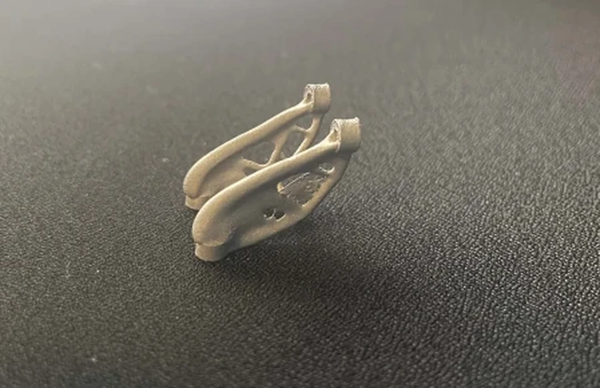

Make it buildable.
Consider workholding, tooling access, tolerances, inspection and assembly while choosing a design.
MANUFACTURING ENGINEERING / MECHANICAL DESIGN / PROCESS IMPROVEMENT
I'm a manufacturing engineer focused on designing buildable products and improving how they're made. I combine mechanical design and tooling with shop-floor insight and cross-functional collaboration to connect design intent with real production.
See selected workGenerative-design bracket · team project
Injection-molded screwdriver · per-part cycle
Formula SAE EV team · 2023 to 2024
Project results and team achievements; simulated values and team outcomes are labeled.
 01 / FEATURED PROJECT
01 / FEATURED PROJECTDESIGN / MANUFACTURE / TEST
Designed and manufactured a datum-based Haas EC-400 fixture, using cutting-force calculations, standard clamping hardware and FEA to guide the workholding design.
RESULT / SUCCESSFUL MACHINING TRIAL
View project 02 / PROJECT
02 / PROJECTRedesigned a key-fob-inspired screwdriver handle for molding, corrected a mold-fit issue through inspection and machining, and tuned the press to produce complete prototypes.
RESULT / FUNCTIONAL PROTOTYPES · ~3 MIN CYCLE
View project
03 / PROJECTCompared lightweight 316L designs, explored build-orientation distortion and inspected the printed bracket to identify dimensional and post-processing limits.
RESULT / 72.86% LIGHTER IN CAD
View projectHOW I THINK / DESIGN PHILOSOPHY
Good engineering connects intent with the people, equipment, and data that make it real.
Consider workholding, tooling access, tolerances, inspection and assembly while choosing a design.
Learn from operators, technicians and partner teams before making changes that affect their work.
Test assumptions, measure outcomes and use what fails to guide the next iteration.
Led an in-house silicone molding process transfer using DOE trials to refine the process, and designed manufacturing fixtures and tooling in SolidWorks.
2023–PresentDeveloped material-flow plans and future-state process sheets, using time-and-motion studies and cross-functional coordination to support production efficiency.
202503 / ABOUT ME
I like working where design decisions meet production reality. Building tooling, evaluating process trials, and collaborating on complex assemblies have taught me to consider not only how something should work, but how it will be made, inspected, and maintained.
Across medical-device manufacturing, automotive production, and Formula SAE, I have learned to work closely with the people who build and use the systems I help design. I want to keep improving products and processes through thoughtful design, practical testing, and feedback from the shop floor.
04 / CONTACT
Open to design-focused manufacturing engineering opportunities involving tooling, process improvement, and cross-functional production work.
fooangela0@gmail.com ↗LinkedIn ↗